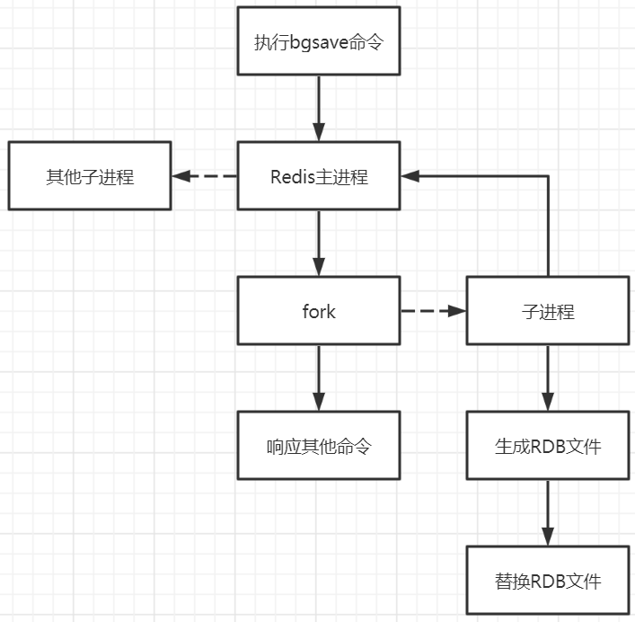

Redis是一个内存数据库，为了保证数据的持久性，它提供了三种持久化方案：
RDB（默认）
AOF
混合持久化模式（Redis 4.0版本新增，Redis 5.0版本默认使用该方案）
RDB(Redis Database)
Redis默认使用RDB持久化方式
RDB持久化是通过快照完成的，当符合一定条件时Redis会自动将内存中的数据进行快照并持久化到硬盘
设置快照规则
在redis.conf配置文件中进行配置：
1 | save "" #不使用RDB存储，一般情况下会注释掉该项 |
触发RDB快照的时机
- 符合redis.conf中配置的快照规则
- 执行了save或者bgsave命令
- 执行了flushall命令
- 执行了主从复制操作
RDB快照的实现原理

流程解析：
- Redis调用操作系统中的fork函数复制一份当前进程的副本作为子进程
- 父进程继续接收并处理客户端发来的命令，而子进程开始将内存中的数据写入硬盘中的临时文件
- 当子进程写入完所有数据后会用该临时文件替换旧的RDB文件，至此，一次快照操作完成
注意事项：
- Redis在进行快照的过程中不会修改RDB文件，只有快照结束后才会将旧的文件替换成新的，任何时候的RDB文件都是完整的。
- 可以通过定时备份RDB文件来实现Redis数据库的备份，RDB文件是经过压缩的二进制文件，占用的空间小于内存中的数据，有利于传输。
RDB的缺点：
使用RDB方式实现持久化，一旦Redis异常退出，就会丢失最后一次快照以后更改的所有数据。可以通过设置漏斗型的快照规则将可能发生的数据丢失控制在能够接受的范围。如果数据相对来说比较重要，希望将损失降到最低，可以使用AOF方式进行持久化。
RDB的优点：
RDB可以最大化Redis的性能，父进程在保存RDB文件时只需要fork出一个子进程，由子进程来处理所有的保存工作，父进程无需执行任何磁盘IO操作。但如果数据集比较大，fork也可能比较耗时，造成服务器在一段时间内停止处理客户端的请求。
AOF(Append Only File)
Redis默认情况下不开启AOP持久化
开启AOF持久化后，每执行一条会更改Redis中数据的命令，Redis就会将该命令写入到硬盘中的AOF文件中，这一过程会降低Redis的性能，但大部分情况下这个影响是可以接受的，使用较快的硬盘可以提高AOF性能
开启AOF
修改redis.conf文件
1 | # 将appendonly参数指定为yes开启AOF持久化 |
同步磁盘的配置
可以通过appendfsync参数来配置同步磁盘的时机，可选值有：always、everysec、no
1 | # 每次执行写入都会进行同步，这种方式最安全但是效率也比较低 |
Redis每次更改数据的时候，aof机制都会将命令记录到aof文件，但是由于操作系统的缓存机制，数据并没有实时写入到硬盘，而是先写入到AOF缓冲，再通过硬盘缓存机制刷新并保存到文件中。
AOF重写
当AOF文件体积变得过大时，Redis会自动地在后台对AOF进行重写。重写后的新AOF文件包含了恢复当前数据集所需的最小命令集合。
比如先后执行了三条语句：
set key value1
set key value2
set key value3
在AOF重写后会将三条语句合并为一条语句：
set key value3
AOF文件有序地保存了对数据库执行的所有写入操作，这些写入操作以Redis协议RESP的格式保存，因此AOF文件的内容非常容易被人读懂，对文件进行分析也很轻松。
如何选择RDB与AOF
- 当Redis用作内存数据库时，必须保证数据不能丢失，所以选择rdb + aof混合持久化方式
- 当Redis用作缓存数据库时，使用rdb持久化方式，保证其性能
- 不建议只使用aof持久化，因为其性能很差
- 在非必须进行持久化的业务中，可以关闭持久化功能，这样可以有效的提升Redis的运行速度，不会出现间歇性卡顿的问题
混合持久化模式
RDB和AOF持久化各有利弊，RDB可能会导致一定时间内的数据丢失，而AOF由于文件较大会影响Redis的启动速度，为了能同时拥有RDB和AOF的优点，Redis 4.0版本之后新增了混合持久化模式。混合持久化模式在写入的时候，先把当前的数据以RDB的形式写入文件的开头，再将后续的操作命令以AOF的格式存入文件，这样既能保证Redis重启时的速度，又能降低数据丢失的风险。
查询是否开启混合持久化方案
1 | 127.0.0.1:6380> config get aof-use-rdb-preamble |
yes表示已经开启混合持久化，no表示关闭，Redis 5.0版本默认为yes
开启混合持久化方案
通过命令行开启，但这种方式在重启Redis之后会失效
1 | config set aof-use-rdb-preamble yes |
通过修改Redis配置文件开启，修改配置文件之后需要重启Redis服务器才能是配置生效
1 | aof-use-rdb-preamble yes |